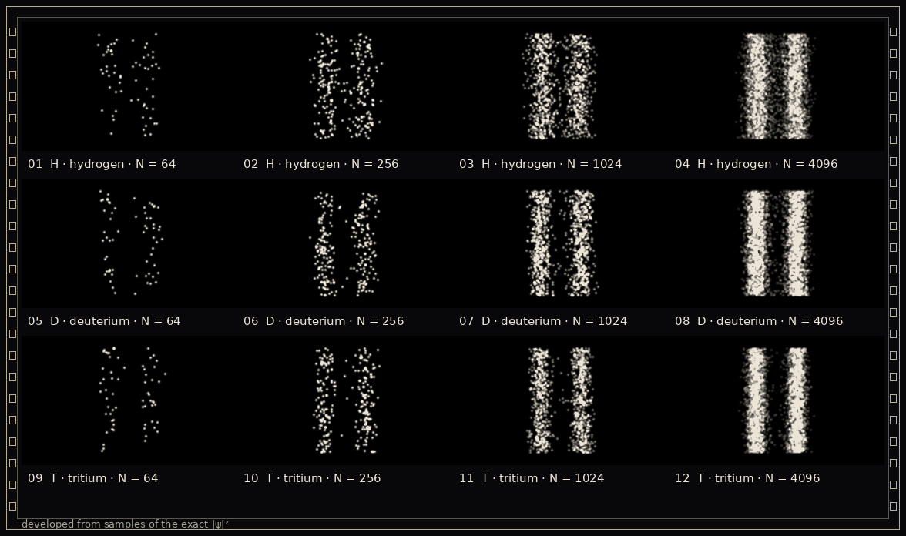

11 · Exposures
Every grain is one time the proton was looked at. Look enough times, and the wave appears.

developed from samples of the exact |ψ|²
Hydrogen, grains accumulating from 1 to 4096. One soft click per grain, panned from donor to acceptor.